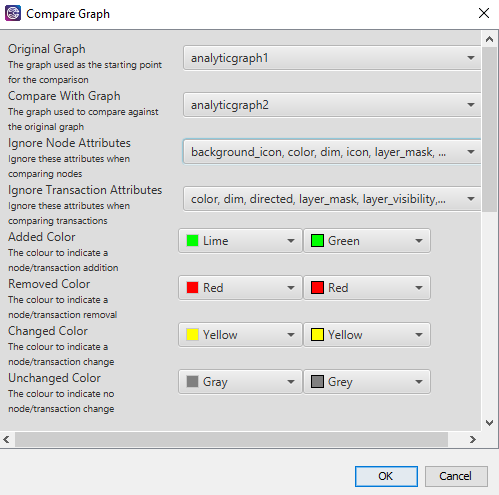

Compare Graph
Compare two graphs and show the differences in a new graph
Compare Graph Actions
| Constellation Action |
Keyboard Shortcut |
User Action |
Menu Icon |
|
Run Compare Graph
|
|
Tools -> Compare Graph
|
|
Compare Graph does a comparison of two open graphs and shows the differences in a new graph. An output window will also
displayed with descriptions of the differences. Possible detected differences are additions, deletions, and
attribute value changes.

In the new graph, each node and transaction will be coloured according to the change detected. An attribute will also be
added called Compare with value set to whatever change was detected (Added, Removed, Modified, or Unchanged).
Parameters
- Original Graph - the graph to use as a starting point for the comparison
- Compare With Graph - the graph to compare against the original graph
- Ignore Node Attributes - node attributes to ignore for the comparison
- Ignore Transaction Attributes - transaction attribute to ignore for the comparison
- Added Colour - the colour to indicate an node/transaction addition (default is Green)
- Removed Colour - the colour to indicate a node/transaction removal (default is Red)
- Changed Colour - the colour to indicate a node/transaction attribute value change (default is Yellow)
- Unchanged Colour - the colour to indicate no change to a node/transaction (default is Grey)